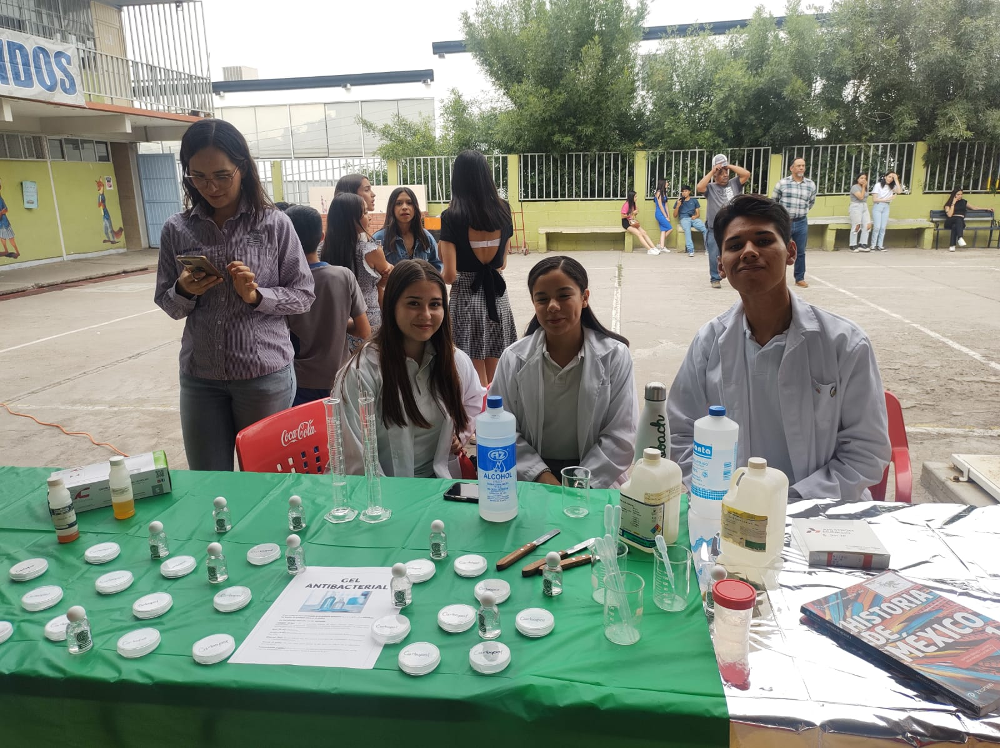
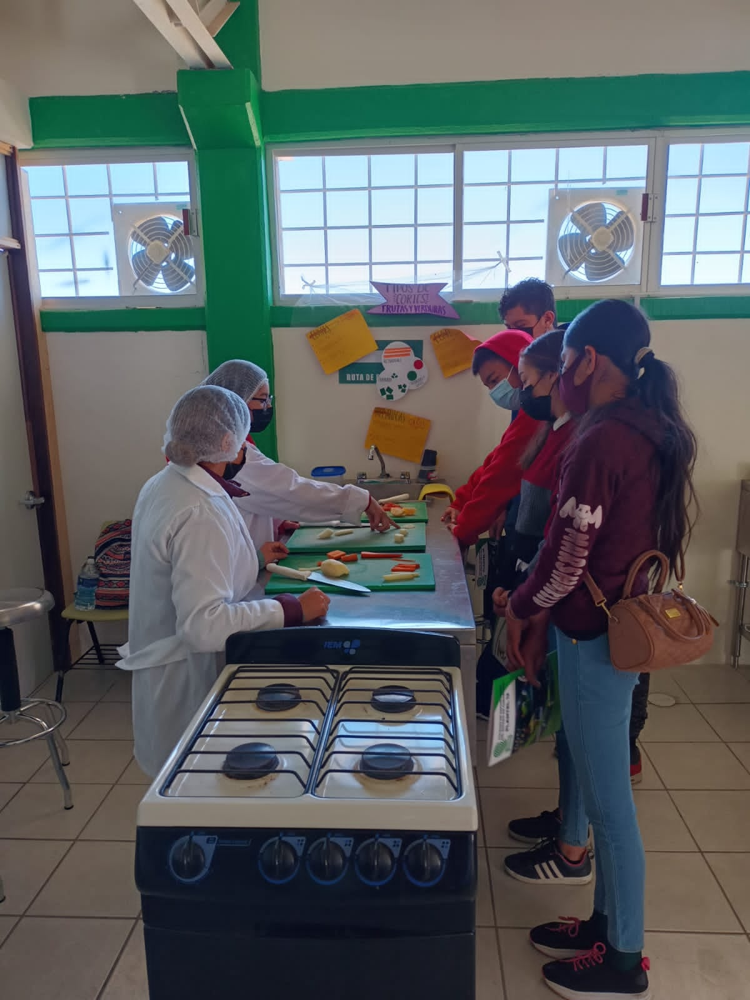
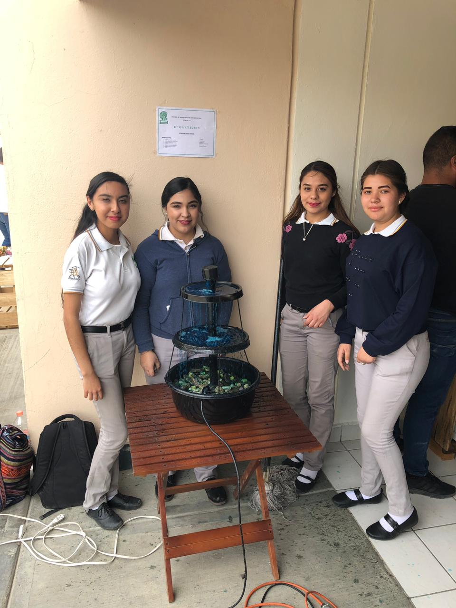
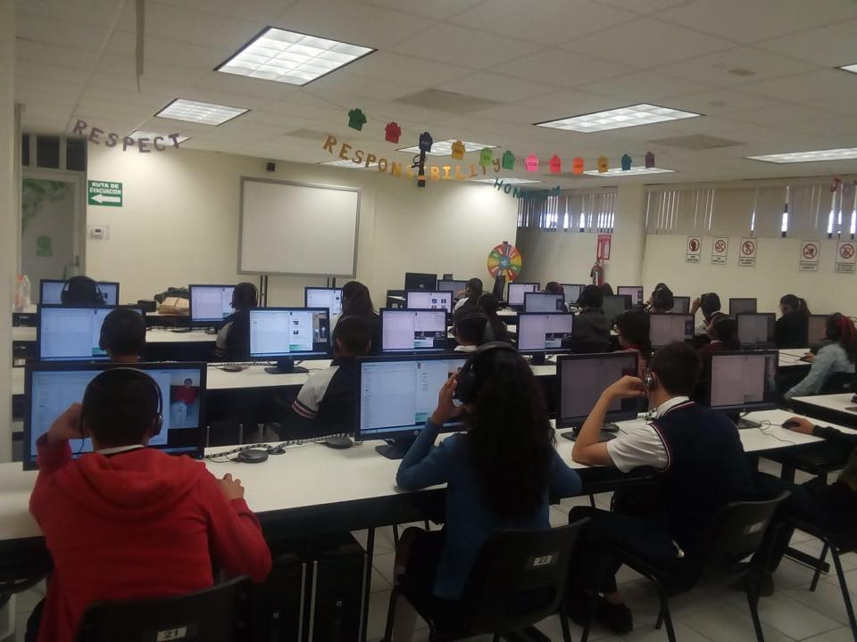
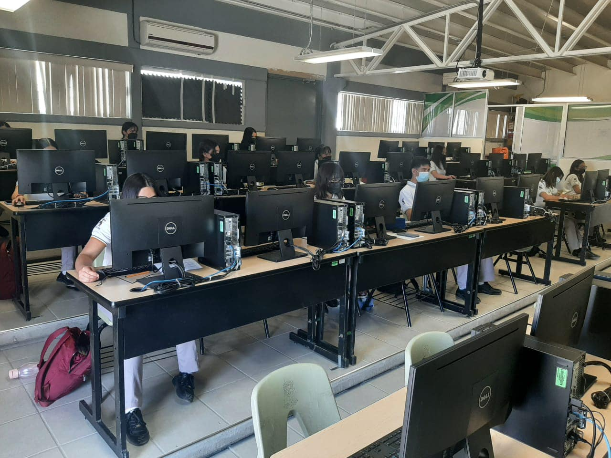

COMPONENTES DE FORMACIÓN PARA EL TRABAJO
El alumno(a) elegira una capacitacion, misma que cursara OBLIGATORIAMENTE en 3ro, 4to, 5to y 6to semestre. .

Analista Quimico

Laboratorio Clinico
La capacitación de laboratorista clínico involucra la formación en técnicas de laboratorio especializadas y el conocimiento de análisis médicos para contribuir al diagnóstico y tratamiento de enfermedades.

Nutricion
La capacitación en nutrición involucra la adquisición de conocimientos y habilidades para comprender los principios fundamentales de la alimentación y la nutrición, así como su aplicación en la promoción de la salud y el bienestar.

Contabilidad
La capacitación en contabilidad implica aprender los principios y técnicas fundamentales para registrar, analizar y comunicar la información financiera de una organización.

Emprendimiento y Negocios
la capacitacion de emprendimiento y negocios implica aprender las habilidades y conocimientos necesarios para crear, gestionar y hacer crecer un negocio de manera exitosa.

Interpretacion y Traduccion del Idioma Ingles
La capacitación en interpretación y traducción del idioma inglés implica adquirir habilidades avanzadas para comprender, comunicar y transmitir de manera precisa y efectiva información entre el inglés y otro idioma.
